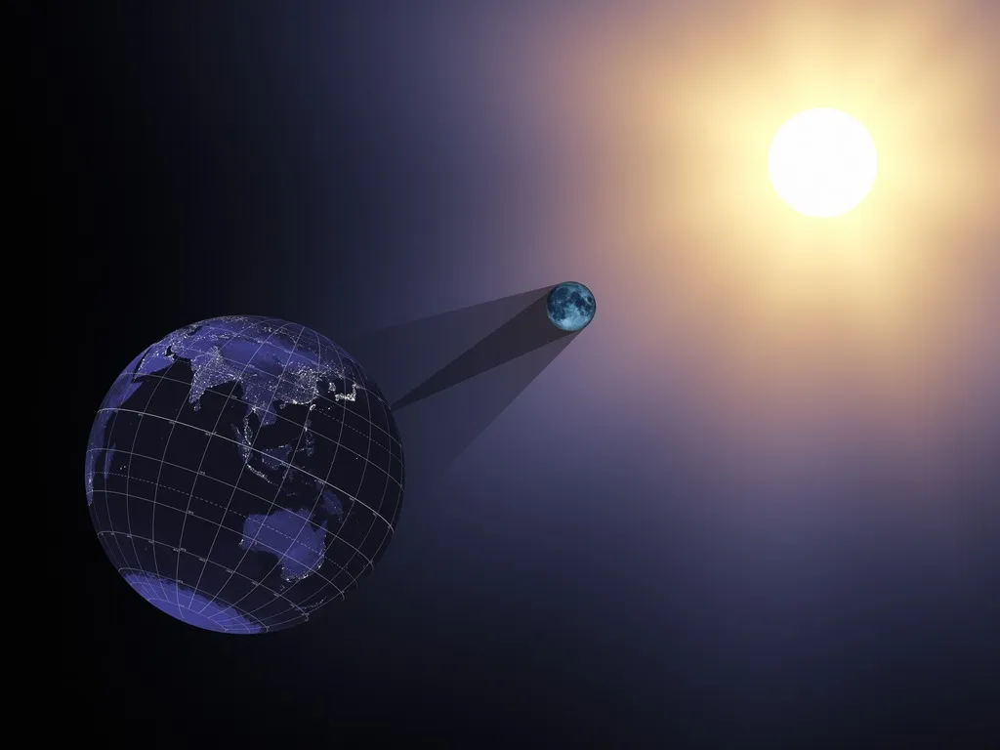

An eclipse happens when a planet or moon obtructs (gets in the way of) the Sun’s light. Here on Earth, we can experience two kinds of eclipses: solar eclipses and lunar eclipses.
Solar Eclipse

A solar eclipse happens when the Moon passes between the Sun and Earth, blocking at least some of the Sun and casting a shadow on Earth.

Solar eclipses only happen during the new Moon, when the Moon and Sun are aligned on the same side of the Earth.
Although a new Moon happens about once a month, Solar eclipses do not.That is because the Moon does not orbit in
the same place as the Sun and Earth are in (known as the ecliptic plane). Instead, the Moon’s orbit around Earth
is tilted by about five degrees.
Watch a short video about this here
There are only two times a year- eclipse seasons- when the new Moon crosses the Earth-Sun (ecliptic) plane and provides opportunities for solar eclipses.
Lunar Eclipse

A lunar eclipse happens at the full moon phase. When the Earth is positioned precisely between the Moon and Sun, The Earth’s shadow falls upon the surface of the Moon, dimming it and sometimes turning the lunar surface a striking red over the course of a few hours. Each lunar eclipse is visible from half of Earth.
Below are short videos explaining more:
Lunar Eclipse
Solar Eclipse
Partial Solar and Lunar Eclipse (Why can only some people on earth see an eclipse at a given time?)